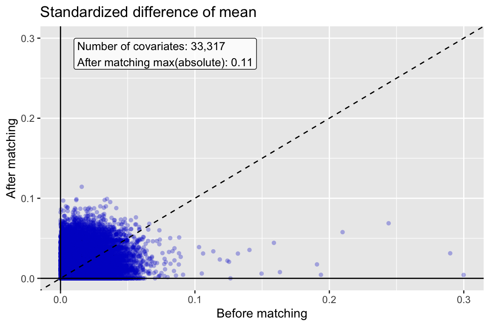
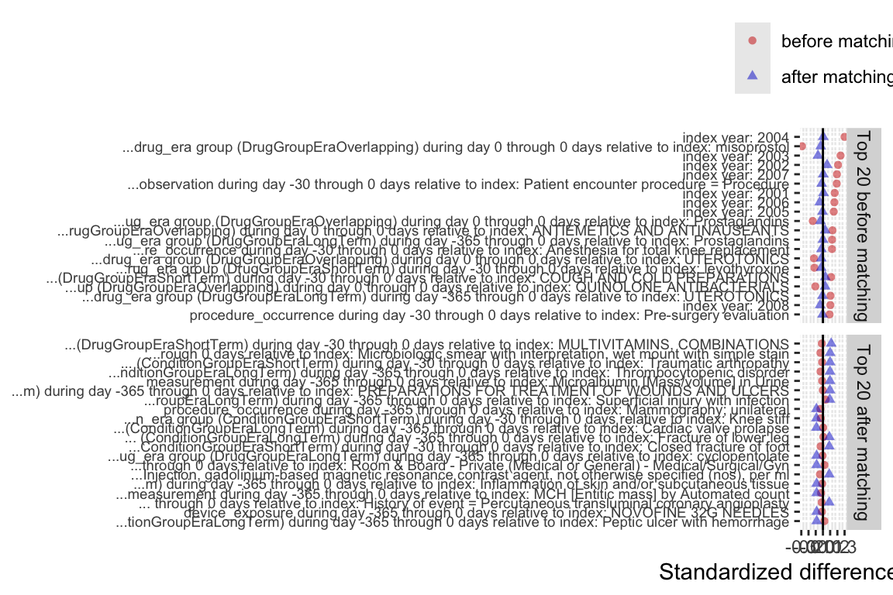

library(Capr)
osteoArthritisOfKneeConceptId <- 4079750
celecoxibConceptId <- 1118084
diclofenacConceptId <- 1124300
osteoArthritisOfKnee <- cs(
descendants(osteoArthritisOfKneeConceptId),
name = "Osteoarthritis of knee")
attrition <- attrition(
"prior osteoarthritis of knee" = withAll(
atLeast(1, conditionOccurrence(osteoArthritisOfKnee),
duringInterval(eventStarts(-Inf, 0)))))
celecoxib <- cs(descendants(celecoxibConceptId),
name = "Celecoxib")
diclofenac <- cs( descendants(diclofenacConceptId),
name = "Diclofenac")
celecoxibCohort <- cohort(
entry = entry(
drugExposure(celecoxib, firstOccurrence()),
observationWindow = continuousObservation(priorDays = 365)),
attrition = attrition,
exit = exit(endStrategy = drugExit(celecoxib,
persistenceWindow = 30,
surveillanceWindow = 0)))
diclofenacCohort <- cohort(
entry = entry(
drugExposure(diclofenac, firstOccurrence()),
observationWindow = continuousObservation(priorDays = 365)),
attrition = attrition,
exit = exit(endStrategy = drugExit(diclofenac,
persistenceWindow = 30,
surveillanceWindow = 0)))
# Note: this will automatically assign cohort IDs 1 and 2, respectively:
exposureCohorts <- makeCohortSet(celecoxibCohort, diclofenacCohort)Comparative cohort methods
Biostat 218
1 Introduction
In these lectures we will learn about:
Using
CohortMethodto perform comparative cohort studiesLSPS through
FeatureExtractionandCyclopsEvaluating objective diagnostics
2 Motivating study
What is the relative risk of gastrointestinal (GI) bleeding-related hospitalization within 30 days of celecoxib vs diclofenac treatment in patients with osteoarthritis of the knee?

- Indication (I): osteoarthritis of the knee
- Target (T): celecoxib first-exposure
- Comparator (C): diclofenac first-exposure
- Outcome (O): GI-bleed hospitalization
- Time-at-risk (TAR): exposure initiation + 30 days
- Model specification: LSPS-matched Cox proportional hazards regression
3 Exposures and outcomes
Standard vocabulary terms:
- Condition: osteoarthritis of the knee (4079750)
- Drug ingredient: celecoxib (1118084)
- Drug ingredient: diclonefac (1124300)
4 PhenotypeLibrary outcomes
The OHDSI PhenotypeLibrary provides a well-curated GI-bleed-related hospitalization phenotying algorithm
renv::install("OHDSI/PhenotypeLibrary")library(PhenotypeLibrary)
outcomeCohorts <- getPlCohortDefinitionSet(77) # GI bleed
allCohorts <- dplyr::bind_rows(outcomeCohorts, exposureCohorts)
allCohorts# A tibble: 3 × 4
cohortId cohortName json sql
<dbl> <chr> <chr> <chr>
1 77 Gastrointestinal bleeding with inpatient admission "{\n\t\"cdm… "CRE…
2 1 celecoxibCohort "{\"Concept… "CRE…
3 2 diclofenacCohort "{\"Concept… "CRE…5 Instantiate cohorts in data source
Use the Eunomia data source to demonstrate (actual results from Optum EHR)
library(CohortGenerator)
connectionDetails <- Eunomia::getEunomiaConnectionDetails(overwrite = FALSE)
cdmDatabaseSchema <- "main"
cohortDatabaseSchema <- "main"
cohortTableNames <- getCohortTableNames(cohortTable = "my_cohorts")
createCohortTables(connectionDetails = connectionDetails,
cohortDatabaseSchema = cohortDatabaseSchema,
cohortTableNames = cohortTableNames)
generateCohortSet(connectionDetails = connectionDetails,
cdmDatabaseSchema = cdmDatabaseSchema,
cohortDatabaseSchema = cohortDatabaseSchema,
cohortTableNames = cohortTableNames,
cohortDefinitionSet = allCohorts)getCohortCounts(connectionDetails = connectionDetails,
cohortDatabaseSchema = cohortDatabaseSchema,
cohortTable = cohortTableNames$cohortTable) cohortId cohortEntries cohortSubjects
1 77 391 391
NoteNotice the limitations of synthetic CDMs
- What happened to the exposure cohorts? (missing indication)
6 Data pull
# Define which types of covariates must be constructed:
library(FeatureExtraction)
covSettings <- createDefaultCovariateSettings(
excludedCovariateConceptIds = c(diclofenacConceptId, celecoxibConceptId),
addDescendantsToExclude = TRUE)
# Pull data (no need to run)
cohortMethodData <- getDbCohortMethodData(
connectionDetails = connectionDetails,
cdmDatabaseSchema = cdmDatabaseSchema,
targetId = 1,
comparatorId = 2,
outcomeIds = 77,
firstExposureOnly = FALSE, # See note
removeDuplicateSubjects = "keep all", # See note
restrictToCommonPeriod = FALSE, # See note
washoutPeriod = 0, # See note
exposureDatabaseSchema = cohortDatabaseSchema,
exposureTable = cohortTableNames$cohortTable,
outcomeDatabaseSchema = cohortDatabaseSchema,
outcomeTable = cohortTableNames$cohortTable,
covariateSettings = covSettings)
Note
These options could have defined in
- the cohorts (fastest, least re-usable)
getDbCohortMethodData()(middle-ground, what we did)createStudyPopulation()(slowest, most re-usable, now deprecated)
8 Defining the study population
studyPop <- createStudyPopulation(
cohortMethodData = cohortMethodData,
outcomeId = 77,
createStudyPopulationArgs = createCreateStudyPopulationArgs(
removeSubjectsWithPriorOutcome = TRUE,
minDaysAtRisk = 1,
riskWindowStart = 0,
startAnchor = "cohort start",
riskWindowEnd = 30,
endAnchor = "cohort end"
)
)Study population has 9538 rowsDT::datatable(getAttritionTable(studyPop))9 Propensity scores
Building a large-scale propensity score (LSPS) model is straight-forward:
ps <- createPs(
cohortMethodData = cohortMethodData,
population = studyPop,
# excludedCovariateConceptIds = c(diclofenacConceptId, celecoxibConceptId),
control = Cyclops::createControl(
seed = 1, # reproducibility of CV
threads = 4)) # multicore parallelizationexcludeCovariateIdsparameter is not needed; exposure variables removed in data fetch
ImportantUses
Cyclops to efficiently fit large-scale regularized logistic regression
- Supports SIMD / multicore / GPU parallelization
Even with parallelization, LSPS models can take a long time. So remember to save the result locally
saveRDS(ps, "ps_coxibVsNonselVsGiBleed.rds")ps <- readRDS("ps_coxibVsNonselVsGiBleed.rds")10 Propensity score diagnostics
Compute the area under the receiver-operator curve (AUC) for treatment assignment
computePsAuc(ps)[1] 0.7896953Plot the propensity score distribution (on the preference-score scale)
plotPs(ps,
scale = "preference",
showCountsLabel = TRUE,
showAucLabel = TRUE,
showEquipoiseLabel = TRUE)
11 Propensity score diagnostics
Inspect the fitted model by showing covariates with non-0 coefficients
- possibly identify drugs of interest that we forget to exclude, or
- other instrumental variables
TipRemember
we used cross-validated \(L_1\) regularized regression
- most coefficient will shrink to 0
DT::datatable(getPsModel(ps, cohortMethodData) %>%
mutate(absCoef = abs(coefficient)) %>%
select(absCoef, coefficient, covariateName)) %>%
DT::formatRound(columns=c("absCoef", "coefficient"), digits=3)12 Propensity score diagnostics
Inspect empirical equipoise
computeEquipoise(ps)[1] 0.8297805
Tip
A low equipoise (not seen here) indicates little overlap between T and C populations
13 Using propensity scores
Match, stratify or weigh our population
CohortMethodalso supports “trimming” to equipoise (less studied)
Stratification:
stratifiedPop <- stratifyByPs(ps, stratifyByPsArgs = createStratifyByPsArgs(
numberOfStrata = 5))
plotPs(stratifiedPop, ps, scale = "preference")
Matching:
matchedPop <- matchOnPs(ps, matchOnPsArgs = createMatchOnPsArgs(
caliper = 0.2,
caliperScale = "standardized logit",
maxRatio = 1)) # 1-to-1 matchingPopulation size after matching is 5308 plotPs(matchedPop, ps)
ImportantExact matching on covariates
stratifyByPsAndCovariates(covariateIds = c(...))matchOnPsAndCovariates(covariateIds = c(...))
See the effect of matching on the population
DT::datatable(getAttritionTable(matchedPop))14 Attrition diagram
drawAttritionDiagram(matchedPop)
Important
A little broken when injecting a simulation in the middle
- Who is going to file a
githubissue and pull-request fix?
15 Evaluating covariate balance
Compute covariate balance before and after PS adjustment
- to check that cohorts are more / sufficiently comparable
balance <- computeCovariateBalance(matchedPop, cohortMethodData)
plotCovariateBalanceScatterPlot(balance,
showCovariateCountLabel = TRUE,
showMaxLabel = TRUE)
TipSimulation effect
Ellipsoid (most covariates are independent \(\ldots\) unlike reality)
From the original patient cohorts

16 Evaluating covariate balance
plotCovariateBalanceOfTopVariables(balance)
17 Reporting population characteristics
Most comparative cohort studies report select population characteristics before and after PS adjustment
DT::datatable(createCmTable1(balance))18 Generalizability
PS adjustment \(\rightarrow\) make T and C more comparable
Consequence: modified population is less similar to starting data source
How different? And in what ways?
DT::datatable(getGeneralizabilityTable(balance)) %>%
DT::formatRound(columns=c("beforeMatchingMean", "afterMatchingMean", "stdDiff"),
digits=3)Warning in instance$preRenderHook(instance): It seems your data is too big for
client-side DataTables. You may consider server-side processing:
https://rstudio.github.io/DT/server.html
Note
PS matching suggests an average treatment effect in the treated (ATT) analysis. So, getGeneralizibilityTable() automatically selected the T cohort for evaluation.
19 Follow-up and power
Minimum detectable relative risk (MDRR) reports a relative risk (under a simple Poisson model) for which there is >80% power to detect
computeMdrr(
population = studyPop, # Should also compute under matchedPop
modelType = "cox",
alpha = 0.05,
power = 0.8,
twoSided = TRUE
) targetPersons comparatorPersons targetExposures comparatorExposures
1 3965 5573 3965 5573
targetDays comparatorDays totalOutcomes mdrr se
1 302479 420287 118 1.687594 0.186788520 Follow-up and power
Follow-up time distribution statistics
getFollowUpDistribution(population = matchedPop) 100% 75% 50% 25% 0% Treatment
1 2 21 50 100 492 1
2 2 24 54 105 596 0plotFollowUpDistribution(population = matchedPop)
Note
Simulated time-at-risk is exponentially distribution
21 Kaplan-Meier plot
plotKaplanMeier(matchedPop)
TableGrob (2 x 1) "arrange": 2 grobs
z cells name grob
1 1 (1-1,1-1) arrange gtable[layout]
2 2 (2-2,1-1) arrange gtable[layout]
Note
Plot will automatically adjust for any stratification, matching, etc.
22 Fitting the outcome model
Using a Cox proportional hazards model
- univariate: treatment-effect only
outcomeModel <- fitOutcomeModel(population = matchedPop,
fitOutcomeModelArgs = createFitOutcomeModelArgs(
modelType = "cox"))Using prior: None
Using 1 thread(s)
Using 1 thread(s)
Using 1 thread(s)
Using 1 thread(s)
Using 1 thread(s)
Using 1 thread(s)Outcome model fitting status is: OKoutcomeModel Estimate lower .95 upper .95 logRr seLogRr
treatment 1.18794 0.67710 2.09780 0.17222 0.288523 Fitting the outcome model
Adding interaction terms to the outcome model
interactionCovariateIds <- c(8532001)
# 8532001 = Female
outcomeModel <- fitOutcomeModel(population = matchedPop,
cohortMethodData = cohortMethodData,
fitOutcomeModelArgs = createFitOutcomeModelArgs(
modelType = "cox",
interactionCovariateIds = interactionCovariateIds))Using prior: None
Using 1 thread(s)
Using 1 thread(s)
Using 1 thread(s)
Using 1 thread(s)
Using 1 thread(s)
Using 1 thread(s)
Using 1 thread(s)
Using 1 thread(s)
Using 1 thread(s)
Using 1 thread(s)
Using 1 thread(s)Outcome model fitting status is: OKoutcomeModel Estimate lower .95 upper .95 logRr seLogRr
treatment 0.77942 0.27850 2.09234 -0.24921 0.5144
treatment * gender = FEMALE 1.87790 0.56446 6.47744 0.63015 0.6225
Tip
- Include gender main-effect as well via
includeCovariateIds = c(interactionCovariateIds)
24 Multiple TCOs
CohortMethod has been finely tuned to efficiently execute across multiple
- Targets (T)
- Comparators (C)
- Outcomes (O) – think: negative control outcomes (NCOs)
- Analyses (A) – think: TARs, matching vs stratification
by caching intermediate study artifacts
For an example, please see Running multiple analyses vignette
25 Including negative control outcomes
Define NCOs through condition_occurrence concept IDs
- Hypothyroidism (140673)
negativeControlIds <- c(29735, 140673, 197494,
198185, 198199, 200528, 257315,
314658, 317376, 321319, 380731,
432661, 432867, 433516, 433701,
433753, 435140, 435459, 435524,
435783, 436665, 436676, 442619,
444252, 444429, 4131756, 4134120,
4134454, 4152280, 4165112, 4174262,
4182210, 4270490, 4286201, 4289933)
negativeControlCohorts <- tibble(
cohortId = negativeControlIds,
cohortName = sprintf("Negative control %d", negativeControlIds),
outcomeConceptId = negativeControlIds
)
generateNegativeControlOutcomeCohorts(
connectionDetails = connectionDetails,
cdmDatabaseSchema = cdmDatabaseSchema,
cohortDatabaseSchema = cohortDatabaseSchema,
cohortTableNames = cohortTableNames,
negativeControlOutcomeCohortSet = negativeControlCohorts
)getCohortCounts(connectionDetails = connectionDetails,
cohortDatabaseSchema = cohortDatabaseSchema,
cohortTable = cohortTableNames$cohortTable) cohortId cohortEntries cohortSubjects
1 77 391 391
2 140673 31 31
3 198199 9 926 Acknowledging the community
Considerable work has been dedicated to provide the CohortMethod and Cyclops packages
citation("CohortMethod")To cite CohortMethod in publications use:
Schuemie MJ, Reps JM, Black A, DeFalco F, Evans L, Fridgeirsson E,
Gilbert JP, Knoll C, Lavallee M, Rao G, Rijnbeek P, Sadowski K, Sena
A, Swerdel J, Williams RD, Suchard MA (2024). "Health-analytics data
to evidence suite (HADES): open-source software for observational
research." _Studies in Health Technology and Informatics_, *310*,
966-970. doi:10.3233/SHTI231108 <https://doi.org/10.3233/SHTI231108>.
<https://doi.org/10.3233/shti231108>.
A BibTeX entry for LaTeX users is
@Article{,
title = {Health-analytics data to evidence suite (HADES): open-source software for observational research},
author = {M. J. Schuemie and J. M. Reps and A. Black and F. DeFalco and L. Evans and E. Fridgeirsson and J. P. Gilbert and C. Knoll and M. Lavallee and G. Rao and P. Rijnbeek and K. Sadowski and A. Sena and J. Swerdel and R. D. Williams and M. A. Suchard},
journal = {Studies in Health Technology and Informatics},
year = {2024},
volume = {310},
pages = {966-970},
doi = {10.3233/SHTI231108},
url = {https://doi.org/10.3233/shti231108},
}citation("Cyclops")To cite Cyclops in publications use:
Suchard MA, Simpson SE, Zorych I, Ryan P, Madigan D (2013). "Massive
parallelization of serial inference algorithms for complex
generalized linear models." _ACM Transactions on Modeling and
Computer Simulation_, *23*, 10. doi:10.1145/2414416.2414791
<https://doi.org/10.1145/2414416.2414791>.
A BibTeX entry for LaTeX users is
@Article{,
author = {M. A. Suchard and S. E. Simpson and I. Zorych and P. Ryan and D. Madigan},
title = {Massive parallelization of serial inference algorithms for complex generalized linear models},
journal = {ACM Transactions on Modeling and Computer Simulation},
volume = {23},
pages = {10},
year = {2013},
doi = {10.1145/2414416.2414791},
}This work is supported in part through the National Institutes of Health and the U.S. Department of Veterans Affairs